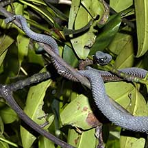
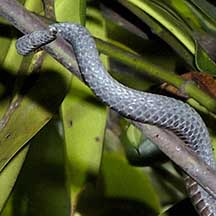
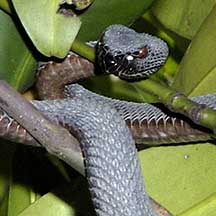

|
|
| snakes text index | photo index |
| Phylum Chordata > Subphylum Vertebrata > Class Reptilia > shore snakes |
| Shore
pit viper Cryptelytrops purpureomaculatus Family Viperidae updated Oct 2016 Where seen? This shy snake looks just like another branch in a mangrove tree where it usually coils motionless. It is more active at night. According to Baker, in Singapore, it is found in Sungei Buloh, Lim Chu Kang, Sentosa, Pasir Ris and Pulau Ubin. This mangrove tree-dwelling snake is found in Sumatra, peninsular Malaysia to Thailand. It is also sometimes called the Mangrove pit viper and was previously known as Trimeresurus purpureomaculatus. Features: To about 1m long. A small snake with the typical broad triangular head of a viper and large red eyes on a rather angry looking face. Those seen in our mangroves are uniformly dark purplish brown, sometimes with a fine white stripe. Elsewhere, they may be speckled. Like other vipers, it has a prehensile tail and can grip a branch to hang on while it whips out the rest of its body for the lethal bite. This venomous snake can strike far and rapidly and can be aggressive. So please do leave it alone. When distressed, it has been observed to shake its tail vigorously against the vegetation, creating a rattling sound. What does it eat? It feeds on lizards, frogs and other small animals, possibly small birds. Like other vipers, it has heat-sensing pits on its lips to detect its prey. Dog-faced babies: Mama snake gives birth to live young in litters of 7-14. Hatchlings have dark brown saddle bars along the back. Status and threats:Our Shore pit vipers are listed as 'Endangered' on the Red List of threatened animals of Singapore. Like other creatures of the intertidal zone, they are affected by human activities such as reclamation and pollution. |
 Sungei Buloh Wetland Reserve, Nov 03  A prehensile tail.  |
| Shore pit vipers on Singapore shores |
| Photos of Shore pit vipers for free download from wildsingapore flickr |
| Distribution in Singapore on this wildsingapore flickr map |
Links
|
|
|